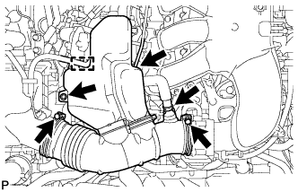

ДАТЧИК ПОЛОЖЕНИЯ РАСПРЕДВАЛА > СНЯТИЕ |
| 1. СНИМИТЕ ДЕКОРАТИВНУЮ КРЫШКУ V-ОБРАЗНОГО ДВИГАТЕЛЯ |
 |
Поднимите переднюю часть декоративной крышки V-образного двигателя, чтобы открепить 2 штифта. Затем снимите 2 крюка декоративной крышки V-образного двигателя с кронштейна, чтобы снять декоративную крышку V-образного двигателя.
| *1 | Штифт |
| *2 | Крюк |
| 2. СНИМИТЕ ШЛАНГ ВОЗДУШНОГО ФИЛЬТРА № 1 |
|  |
Отсоедините шланг вентиляции картера и вакуумный шланг.
Освободите зажим жгута проводов.
Выверните болт и ослабьте 2 хомута шланга.
Снимите шланг воздушного фильтра №1.
| 3. СНИМИТЕ ДАТЧИК ПОЛОЖЕНИЯ РАСПРЕДВАЛА (для ряда 1 на впуске) |
Отсоедините разъем датчика.
Выверните болт и снимите датчик.
| 4. СНИМИТЕ ДАТЧИК ПОЛОЖЕНИЯ РАСПРЕДВАЛА (для ряда 1 на выпуске) |
Отсоедините разъем датчика.
Выверните болт и снимите датчик.
| 5. СНИМИТЕ ДАТЧИК ПОЛОЖЕНИЯ РАСПРЕДВАЛА (для ряда 2 на впуске) |
Отсоедините разъем датчика.
Выверните болт и снимите датчик.
| 6. СНИМИТЕ ДАТЧИК ПОЛОЖЕНИЯ РАСПРЕДВАЛА (для ряда 2 на выпуске) |
Отсоедините разъем датчика.
Выверните болт и снимите датчик.